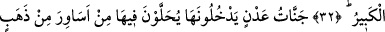
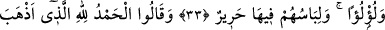
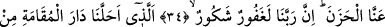
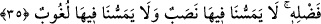
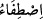
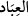

CENNETTE NE YORGUNLUK
NE DE USANÇ VARDIR
32. Sonra Kitab’ı, kullarımız arasından seçtiklerimize verdik. Onlardan
(insanlardan) kimi kendisine zulmeder, kimi ortadadır, kimi de Allah’ın izniyle
hayırlarda öne geçmek için yarışır. İşte büyük fazîlet budur.
33. (Onların mükâfatı), içine girecekleri Adn cennetleridir. Orada altın bilezikler
ve incilerle süslenirler. Orada giyecekleri elbiseleri de ipektir.
34. (Cennette şöyle) derler: Bizden tasayı gideren Allah’a hamdolsun. Doğrusu
Rabbimiz çok bağışlayan, çok nimet verendir.
35. O (Rab) ki lütfuyla bizi asıl oturulacak yurda (cennete) yerleştirdi. Artık
orada bize ne bir yorgunluk dokunacak ne de orada bize bir usanç gelecektir.
32) Sana vahyettikten yahut evvelkilerin kitaplarından yahut ezelde irâde ettikten “Sonra
Kitab’ı, kullarımız arasından seçtiklerimize” dönüşü olmayan tam bir mülkiyetle
“verdik.”
Râğıb der ki, “verâset” akidsiz olarak başkasından bir câriye yahut mal, mülk ve
benzerinin sana intikal etmesidir. Ancak bu akid yerine geçmez. Ölüden intikal edene de
“verâset” ve “mîras” denilmiştir. Ayrıca yorulmadan emeksiz ve zahmetsiz olarak elde
edilen her şeye de “buna vâris oldu; mîrâsa kondu” denilir. Bunun îzâhı yakında
gelecektir.
“__WORD__ kelimesi aslında bir şeyin özünü elde etmek ve seçmek demektir. Her ne
kadar insanın kulluğuna nisbeti hakikat ise de burada “__WORD__ kelimesi kerâmet yeridir.
“Kullarımız arasından seçtiklerimizi” demektir. Çünkü bu âyet nâzil olduğu gün, Hz.
Muhammed (a.s.) çok mutlu oldu. Kendisine erişen bu sevinç sebebiyle üç defa şöyle
dedi: “Kâbe’nin rabbi olan Allah’a yemin olsun ki Allah Teâlâ benim ümmetimin
peygamberini diğer bütün peygamberler arasında seçkin ve onların kitabını diğer bütün
kitaplara üstün kıldığı gibi ümmetimi de diğer ümmetler üzerine seçkin kılmıştır.”